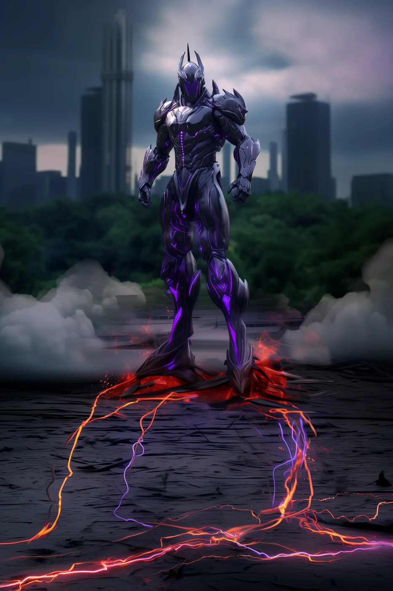

©
©
GENEZYS ARCHIVE · Earth 1 · Legionnaire
Xylox
Glacial Chrono

Archive record
Xylox remembers every fallen ally, and makes sure their enemies remember too. The Frozen Epoch marks a target and waits, patient as ice, for the moment a comrade falls. Then the Order's oldest promise is kept: no loss goes unanswered.
Combat signature
Frozen Epoch
130 Cosmara
260 Animus
290 Vitalis
Needlethreads past protection: As soon as next ally dies, this marked enemy will suffer 120 damage and 100 pierce damage in following round.
Genezys 03:04 ™&©2026LEGIONS
Return to LEGIONS